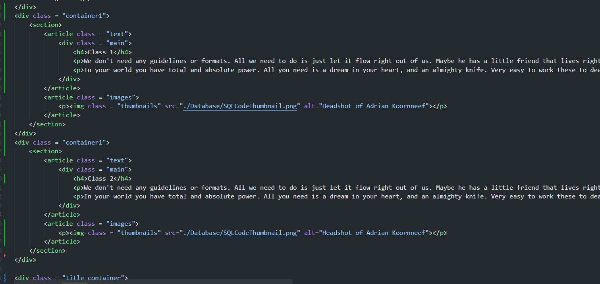

My Application
Thank you for taking the time to review my application. In 2022 and 2023, I have had the distinguished pleasure of attending Fleming College's GIS Application Specialist - Online program. The last six months has been a fascinating journey, and I'd like to take you over some of the hilights.
For your consideration, I have built this portfolio to demonstrate some of the skills I have learned and the projects I have worked on. The application is categorized by the major skills and competencies from the program. Each section includes descriptions and images demonstrating some of the key projects I completed. Some listed projects will have an indication that they are available for download. This can be accomplished by accessing the GitHub repository of the website, which is organized in the same fashion.
Acknowledgements
...
Database Management
Course name: GEOM 65: Database Management
Grade achieved: 90%
Course Competencies:
Demonstrate how to efficiently organize and prepare data for a GIS
Create efficient queries to retrieve data in multiple tables
Design queries to perform calcualtions and manipulated stored data
Transfer data between a database and otehr applications
Design a simple conceptual model for a relational database for a given problems
Course Hilight(s):
Creating an application with Survey 123 and implementing it in field.
Project details:
Design queries to perform calcualtions and manipulated stored data
Transfer data between a database and otehr applications
Team members: Person 1, Person 2, Person 3

Course name: GEOM 65: Database Management
Grade achieved: 90%
Course Competencies:
Demonstrate how to efficiently organize and prepare data for a GIS
Create efficient queries to retrieve data in multiple tables
Design queries to perform calcualtions and manipulated stored data
Transfer data between a database and otehr applications
Design a simple conceptual model for a relational database for a given problem.
Course Hilight(s):
Creating an application with Survey 123 and implementing it in field.
Project details:
Design queries to perform calcualtions and manipulated stored data
Transfer data between a database and otehr applications
Team members: Person 1, Person 2, Person 3